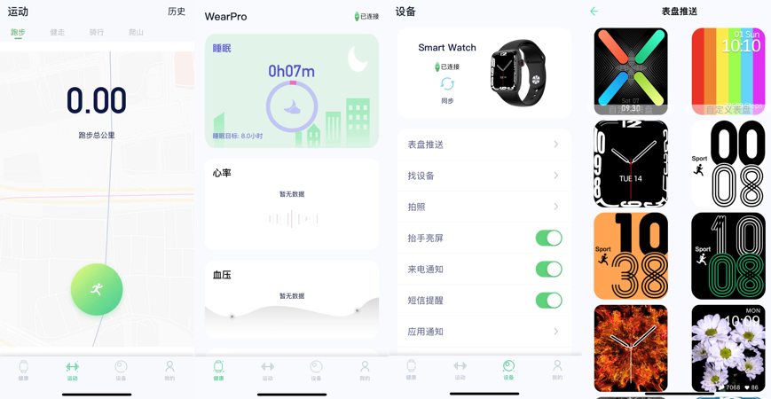

第一眼看上去，以为是iWatch，答案可能不一定。今天这篇文章跟大家一起聊一聊华强北自主品牌Wtach，以下简称qbWatch（强北Watch）。
华强北智能手表的崛起
华强北蓝牙智能手表qbWatch突然火热起来，源于抖音的直播卖货－T500型号，初代的性能低，屏小，显示效果差，里面做工也不是很好。随着硬件和软件的升级，后来陆续有几个型号火爆。
在电商平台或各微商朋友圈里，热销的手表外形要不像苹果的，要不就是像华为GT2的圆盘的，原来并不被很多人接受的圆盘手表突然火爆，是因为那个太空人的表盘火了。
华强北蓝牙智能手表主控芯片以前主要是联发科的MTK2502C和2502D两款，性能都不高，旋下蜂窝菜单都卡滞，还有尔湾芯片的，后来搭载昂瑞微的HS6621芯片的手表上市，才告别了手表卡顿，因而首款采用昂瑞微芯片的HW22成为爆款，市场经常缺货，经常涨价二三十元(HS6621为单BLE芯片，支持手表通话需要加一颗经典蓝牙，型号为AB5376A2)。后面在HS6621基础之上推出了Realtek8762D。Realtek8762D只支持单BLE芯片，所以2021年12月最新的智能手表GT7 +系列采用Realtek8762D配合上海博通集成电路的经典蓝牙芯片RB3266作为智能手表主控制器。
qbWatch vs iWatch
最近在朋友推荐下购入一块华强北GT 7+ qbWatch手表，拿来和自己的iWatch 7对比如下,屏幕分辨上微略看的出正品与qbWatch之间的差异，正品的表盘更贴边框，qbWatch内嵌显示屏和表盘边框贴合没有非常紧密，其次表盘的亮度上正品亮度略高。但从动态UI显示上，尽管qbWatch表盘界面和显示动画做的非常流畅和与Apple界面相似，但是和iWatch 7在一起玩时的视觉感受上还有一段距离，qbWatch模仿的缺少了些美感。

接着看表盘背面，正版iWatch 7心率模块圆盘尺寸比qbWatch略大，但质感上两者几乎一致，qbWatch的心率模块灯可以亮，功能“正常”。
两个表盘材质几乎一致无差别，模具结构几乎一致无差别，再看看苹果特色的GUI菜单栏，qbWatch模仿的很像，界面实现的差别不大，并且GT 7+拖拽界面流程度接近正品，如上所述，使用不同的蓝牙芯片，对GUI显示延迟有很大影响，目前为止GT 7+的GUI切换拖拽几乎没时延，较为流畅。
外观和UI显示看不出iwatch和qbWatch的差异，我们再看软件，功能和内容，可以用“齐全”一词形容，一次充电的使用时间可超过1周（已经验证），完胜iWatch的一天一充。

但是，qbWatch有这些功能，并不能代表功能好，或者准确，后面会进行分析。
国内智能穿戴设备的演进逻辑
一个智能手表可以包括好看的外表，数字化健康功能监测，多种运动记录及测评，以及作为智能手机的补充。细化到功能可以包括但不限于，表盘UI，BLE数据同步，经典蓝牙通话，基于皮肤表面的静态/动态心率检测，计步检查，运动卡路里计算，翻腕亮屏，GPS轨迹记录，以及一系列和健康，运动相关的记录和测评，防水，无线充电等。
13-14年开始，国内大量公司开始做智能穿戴设备，以智能手环为例，模具厂提供的不同种工模，私模，方案公司提供的记步算法，心率模块，整机PCBA大街小巷。基本的记步，卡路里计算，喝水提醒，翻腕亮屏显示，静态心率测量的工程软件框架，算法开发在一代一代的开发中迭代，相对成熟，在19-20年，智能穿戴从手环过度到带通话功能的手表过程中，更多的功能开始注入，比如GPS，TFT彩屏，UI表盘，手表蓝牙通话等。
站在10年长度的时间轴上，智能穿戴上的主控芯片随着市场对手表功能要求提升也在演变升级，13-14年主打CC2540/CC2541 SoC，14-15年Nordic 51822 SoC开始冒头，并且在随后的两年里通过低价的51802和更高性能的52832 SoC占据智能手环的主流市场;另一方面，Dialog14580 SoC在华米一炮打红，Dialog后续一直为小米手环提供主控蓝牙芯片。17年始，穿戴市场开始聚合，很多小品牌公司，方案公司，光学模块公司陆续退出历史舞台，知名品牌公司逐渐形成，以华为，小米，OPPO/VIVO为代表的手机厂商，以小天才儿童穿戴为代表的K12教育品牌提供商，以IDO为代表的海外手环提供商，以高驰为代表的运动手表提供商等。他们拥有完整的穿戴设备设计，各类软件算法，UI设计能力，生产制造，并且针对内容（健身，追踪，锻炼，健康）有自己的理解和功能要求。穿戴设备的系统架构趋于复杂，从单颗蓝牙SoC演进为BLE SoC + BT，中高阶甚至以高性能MCU + 超低功耗MCU + BTBLE二合一芯片，在2021年，MCU + 超低功耗MCU + WiFiBT combo方案逐渐成为主流。系统越复杂，分工越明确，大公司的穿戴事业部规模越来越大，产品体验越来越好，带动更多的消费者买单智能穿戴产品。
蛋糕做大，参与者都能分一杯羹。在穿戴领域模具，基本健康功能算法，UI界面逐渐成熟的市场背景下，低成本，好看的穿戴市场开始萌芽了，功能比不上上述的品牌公司，但产品的外观，UI界面好看，在拼多多，抖音，电商带货平台上可以有一席之地，有些聪明的商人看到了华强北自主知识产权的qbWatch市场。
穿戴方案风向标
从手环到手表，硬件物料明显更加丰富，从单颗BLE SoC演变到带ST MIPI接口的高性能MCU，配合低功耗Sensorhub 阿波罗MCU，BES BTBLE，Broadcom GPS，ST的6轴传感器，心率模块等。但是今天的重点不是谈品牌客户，qbWatch的逻辑和品牌厂商不尽相同。
硬件比拼
既然是模仿世界No 1，至少外观要和iwatch一样，这个是硬性指标，至于手表内部硬件，需要由产品售价倒退。产品的售价超过299块钱的小玩意电子产品，大家购买意愿应该不会太强烈，所以降成本，降成本，降成本是核心，上述的品牌客户核心芯片物料不是该市场的主流。
第一颗qbWatch采用的是MTK2502，MTK家族芯片采用高度整合、超轻薄的系统封装，支持双模蓝牙功能及整合式2G Modem，微型控制器单元采用ARM v7架构，具备整合内存控制器。专为单一功能型可穿戴设备所打造的高度整合式系统单芯片，体积超轻薄，采用ARM7EJ-S架构的系统封装，具备整合联网能力。该方案的Design House应该是传统手机方案商，该芯片在屏显效果，刷新率，功耗表现上，包括需要小MCU处理传感器的地方表现并不优秀，但是够用。后续，做BLE SoC智能穿戴的公司开始琢磨，采用的BLE SoC + BT SoC二合一的方式，而不是直接拿处理器来实现硬件方案，IS2806(Irvine Semi)，和HS6621逐渐进入方案商的视线。
初步研究下来，这两家芯片指标直接对标Nordic52832和Nordic52840，但价格上应该有不小优势，该BLE SoC完成了所有传统手环的功能，并且模仿了部分iWatch表盘界面，但该手表缺乏语言通话功能，无奈之下，必须在方案上额外增加一颗经典蓝牙芯片，国产经典蓝牙芯片已经较为成熟，所以选择余地很大。
这种架构在用户体验上有问题，一个手表内部有两颗蓝牙，两个蓝牙MAC，要连两次手机，但属于无奈之举。BLE和BT差异较大，BLE芯片厂商不愿意重新开发BT芯片和协议，传统BT厂家号称可以支持BTBLE，但BLE部分功耗高，不宜于二次开发，外商的BTBLE芯片选择不多，单颗无法满足手表应用及价格过高等诸多限制因素，最终使得上述方案最为合理。
谈完主控，其他的传感器，电源，无线充电，NFC卡片一样需要降本。功能上，支持即可，实用性，可能不太行，这是这款手表主打的特点，性能和性价比需要做一个权衡。
软件比拼
用安卓，还是RTOS？苹果的UI界面显示流畅度？心率检测模型和算法？健康检测模型和算法？运动模型算法和轨迹记录？任务的调度算法？该qbWatch产品，重要的是表面，不是内容，表盘的UI和系统的流程程度是软件的首要考虑因素。在安卓和RTOS的阵营，RTOS有太多优势。低配的芯片运行安卓太卡，高配的芯片运行安卓太贵；安卓功耗太高等等。但选择RTOS，如何做出类似iWatch表盘和UI显示是最大的考验。用MCU去实现表盘界面和滑动效果，离不开一个好的GUI开发框架，比如QT，LVGL等，但实现他们需要一颗高主频MCU。所以，除开IS2806(Irvine Semi)，和HS6621，Realtek 8762D也进入角俎这块应用。
在RTOS框架下，把不同模块插入页面调度内，形成完整的软件实体。显示靠QT或LVGL模块，BLE单独成一模块，运动监控检查组成一模块，Sensor数据读取组成一个更小的模块，被运动检测模块调用，时钟日期显示模块，等等。
硬件限制了软件的实施，不能指望qbWatch中传感器的精度和测量结果的准确度。心率检测模块水平参差不齐，且静态心率和动态心率算法难度相差较大，每一个细节都需要花大量，基于qbWatch的设计理念，此类功能，要从简。
在ID美学和表盘显示上，qbWatch可以打8分，该方案已经把BLE SoC的资源发挥殆尽，和苹果自己的主控芯片相比，实在没有可比的必要。作为299块以内的qbWatch，最豪华款可以打到80分以上。
智能手表的设计理念
qbWatch的崛起离不开珠三角成熟的制造业，能把苹果产品的模具逆向设计出来并且实现低成本的生产，非常的了不起；加之近年来芯片行业的国产化崛起，赋能方案公司降本，在牺牲部分SoC性能的前提下，做到了与性价比的妥协，平衡。方案公司早些年在穿戴领域，在TI，Nordic，Dialog平台上积淀的软件，手机端的App，产品定义可以通过这款ID重新施展开来。从使用者的心态上来讲，拿着qbWatch，配上华强北10块钱的表带，搭配不同服饰，是个不错的选择；在消费有限范围内，感受一下iWatch，体验一把果粉，也是一个不错的选择；作为一个表哥，不想买iWatch，买个qbWatch，感受一下，同样也是一种理由。
如果你是国产芯片，方案供应商，华强北市场是一个可以考虑的点，TWS耳机，qbWatch手表市场捧红了几颗国产无线SoC芯片商和方案商，凭借电商平台，短视频渠道带货，借力打力，不失为一个好的市场突破点。
如果你需要一款智能手表，作为生活的小帮手，和运动健身，睡眠质量检测的小助手，品牌手表是好的选择之一。因为智能手表上的每一项功能，都需要大量的研发投入和算法优化，每一个功能,界面都有专门的PM进行定义，收集更新客户的反馈。经过市场的洗礼和公司的聚合，人才已经往大公司涌入，大公司也足够多的资源和金钱的投入打造更好的穿戴产品。
无论模仿，贴牌，还是品牌手表，除各自的主打功能外，手表ID，UI设计的人性化，人性化，人性化（重要的事情说三遍）是可以多做思考的地方，在表盘显示效果的过度，动画效果与人的交互性，包括提示音，震动效果，可以多融入人文艺术元素。今年iWatch 7的常亮屏，在待机没有抬腕前，显示屏由极简单线条勾勒出一幅待机画面，是一个亮点。它把手表，包括表盘一起作为一件随身搭配的装饰品展现给了大家，而不是留给大家一个黑乎乎的灭屏电子设备。
最后，肯定有人在畅想穿戴市场的蛋糕有多大？我整理了一份2016-2021年上半年全球手环手表出货量，请大家一起吃蛋糕。
按品牌分类（百万台）
按年分类（百万台）
参考资料
知乎：华强北S6智能手表？值得买吗?M16|HW12|HW16|HW22|U98
知乎：品名繁多的华强北蓝牙智能手表怎么选？值得买吗?
知乎：目前华强北最好的手表是哪一款?
「Bluetooth5 堂 微信交流群」
助力行业圈内朋友打通无线相关圈子，Guanxi。
集高通，Nordic，Dialog，ST，Silicon lab, NXP, AMBIQ等蓝牙芯片原厂技术，市场，销售
集华为，MTK，泰凌微，凌思微，盛源达，ASR，华普微，中颖电子芯片原厂
集Arrow，北高智，迅通，世强，利尔达等一线原厂代理FAE和业务
集小米，华米，绿米，涂鸦，雅观，百度，出门问问，京东互联网公司及方案公司研发
集蓝牙认证机构，被动器件，射频公司，以及SIG大佬
申请流程：
① 因群人数已超过限制人，请先微信扫描以下微信二维码或添加Xcoder微信号（blecoder），添加微信时请将您的个人信息进行备注，以便登记，同时也欢迎同行和我进行交流。
② 由于需要我逐个邀请入群，所以请大家耐心等待！谢谢理解与支持！